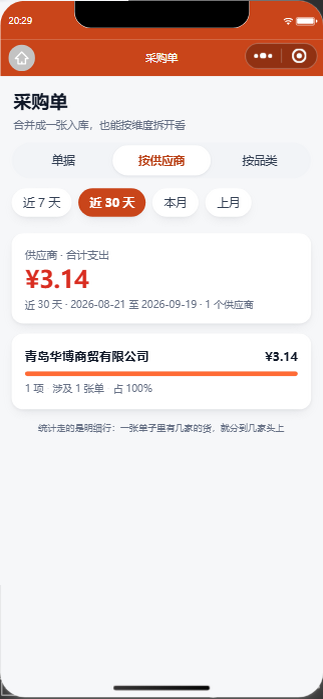
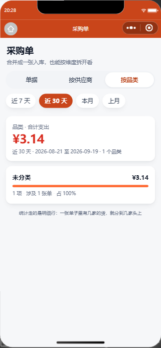
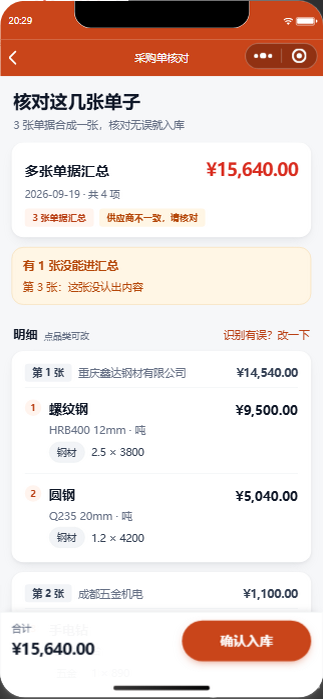
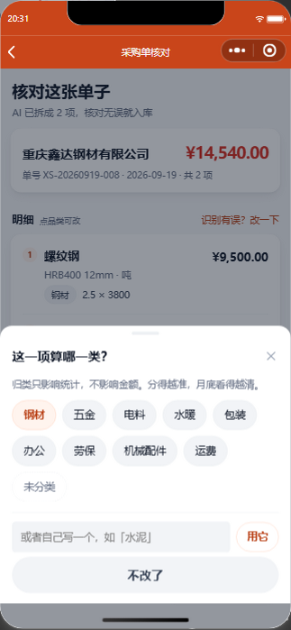

supplier_name（这行是谁家的）、category（这行算哪一类）、
source_file_id（这行来自哪张照片）。
统计走明细行，所以一张单子里有几家的货，钱就分到几家头上。

按供应商 · 合计 + 排行 + 占比条
按品类 · 同一批数据换个维度
核对页 · 3 张合并成一张，按来源分组
核对页 · 品类可点改（当前项高亮）| 做法 | 为什么 |
|---|---|
| 统计走明细行，不走表头 | 表头只有一个供应商名。多供应商的单子一旦合并，按表头统计就把几家的钱糊成一团 —— 那样「合并」就白合并了。 |
合并时逐行补 supplierName |
这是「按供应商统计」能成立的前提。漏了这一步，多张合并的单子统计会全落进「未写供应商」。 |
| 占比条以榜首为 100%，最小 6% | 以总额为基准的话，一家独大时其它全是一条看不见的线；最小 6% 保证尾巴上的小项也看得见，用户不会以为漏了。 |
区间口径集中在 fmt.rangeOf() |
区间是「口径」不是「样式」。各页各写一套日期加减，迟早在报表上出现「采购页说本月、别的页说上月」。 |
取不到数据返回 null |
绝不返回一份全 0 的假报表 —— 否则页面会把「服务挂了」显示成「本月没花钱」。 |
| 「未分类」是一个合法选择 | 宁可空着，也别为了好看硬归一类。视觉上用虚线描边，比真品类轻。 |
| 品类可点改（底部弹层） | AI 归类不一定准。没有这个纠正口，归错一次就永远错下去，统计跟着错到底。 |
.seg 不用实心橙 |
分了两套语义：.chip（实心橙）= 筛掉一部分数据；.seg（浅底橙字）= 换角度看同一批数据。seg 不改变数据范围，不该抢主按钮的位置。 |
probe-stats.js| 项目 | 结果 |
|---|---|
| AI 识别逐行输出品类 | 钢材 / 钢材 |
| 多供应商合并成一张保存 | 合计 15,730 · 5 项 |
| 明细 5 行逐行保住供应商 + 品类 | 5/5 行齐全 |
| 按供应商：鑫达 14,540 / 五金 1,100 / 包装 90 | 三家合计 = 15,730 |
| 按品类：钢材 14,540 / 五金 1,100 / 包装 90 | 一致 |
| 品类沉淀进词表（下次解析优先复用） | 五金、包装、钢材 |
| 非法 groupBy 回落 | 回落 supplier |
probe-stats-front.jsrequire 真实的
utils/api.js 和 utils/format.js，只把 getApp()
换成一层 axios 壳。验的是页面真正会跑的那份代码，不是照着它仿写的。
| 项目 | 结果 |
|---|---|
| 区间口径 d7 / d30 / month / lastMonth | 含今天、上月末尾正确（8-01 ~ 8-31） |
| 后端不可达时返回 null | null（不是假报表） |
| 条形长度：榜首 100%，其余 ≥6% | 100 / 8 / 6 / 6 |
| 排序与占比 | 金额降序 · 占比加总 100% |
| 非法 groupBy 由前端白名单挡下 | 当 supplier 处理 |
| 空区间 | total 0 · list 空 · 显示 0.00 而不是 NaN |
cat file >> x 在这台机器上不是追加，是从第 1 字节覆写purchase.wxss 追加样式块，文件总行数几乎没变，看起来成功了。
实际开头 62 行被吃掉，覆写边界还把第 63 行啃掉 3 个字节
（ font-weight: 700; → ont-weight: 700;）。
丢的是文件头注释、.line1、.po-head、.po-head-top、
.po-supplier、.po-total、.po-meta、.po-row
以及 .po-no 的属性头。
wc -l + grep -n 对行号，发现
.po-group-no 从 369 行跑到了 366 行。只 tail 看一眼会被旧输出骗过去
—— 第一版我就是这么被骗的。
--dry 演练，再落盘，结果与设计稿逐字一致。
_verify/snapshot.sh 源码快照（只收源码，排除 node_modules / .git / uploads）：
20260919-203255-stats-category · 改后 20260919-203834-after-stats-category
（各 222 文件 / 3.2M，--verify 通过）。动手改一批文件前打一个，改完再打一个。
| 产物 | 用途 |
|---|---|
_verify/snapshot.sh | 源码快照 + --verify 校验。这个项目没有 git，靠它兜底。 |
_verify/fix-purchase-wxss.js | 本次事故的修复脚本（可当模板改） |
_verify/probe-stats.js / probe-stats-front.js | 后端 13 项 / 前端层 25 项回归 |
| 技能 miniprogram-ui-system（第八、九节） | 「假追加」的识别与修复流程、源码快照纪律、把前端模块 require 到 Node 里验的方法 |
技能脚本 repair-wxss.js + 回归测试 | 22 / 22 通过。测试第一版就抓到脚本里一个「恒真、永远不可能失败」的自检 —— 恒真的自检比没有自检更危险。 |
api.dtzai.cn 剩余约 59 天）/opt/saas/backup.sh 那条失效 crongroupBy 已留好扩展位